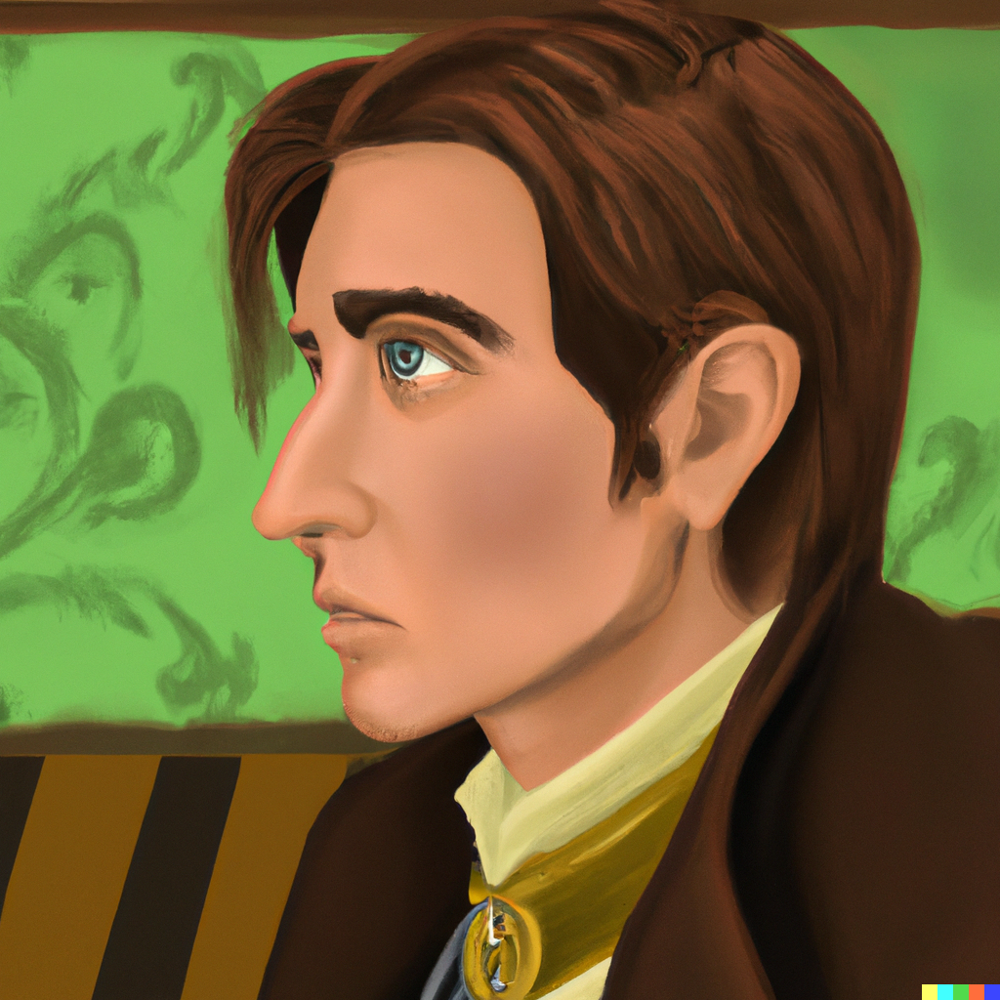
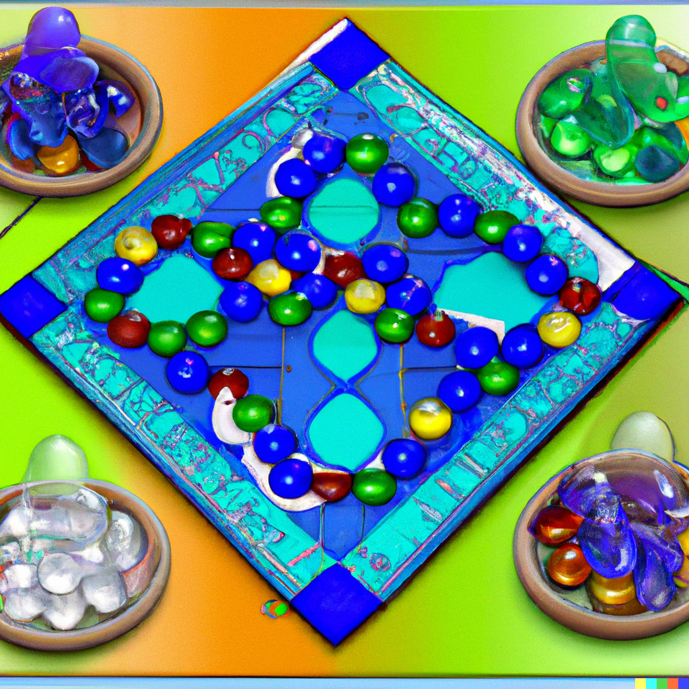
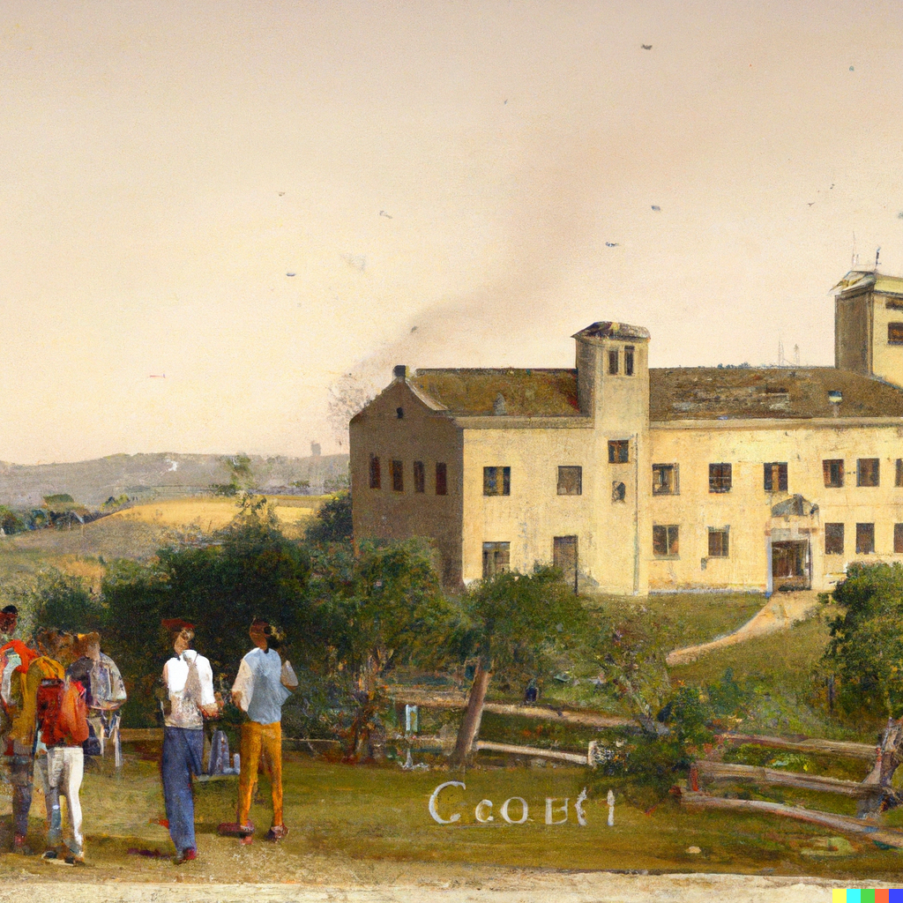

In The Glass Bead Game (Magister Ludi), Herman Hesse tells the story of Joseph Knecht, a brilliant young man who is selected to become the next Magister Ludi, or Master of the Game. Set in a distant future, the novel explores the world of the elite Castalia School and the complex and intellectually challenging Glass Bead Game that lies at its heart.
The Glass Bead Game is a fictional game that combines elements of art, science, and philosophy. It is played by the intellectual elite of Castalia, who spend their lives studying and mastering the game. Knecht is drawn to the game not only by his natural aptitude, but also by its philosophical and spiritual significance. As he progresses through the ranks of the Castalia School and becomes increasingly involved in the game, Knecht begins to understand the profound insights and wisdom that it holds.
One of the central themes of The Glass Bead Game is the tension between intellectual pursuit and social responsibility. Knecht is torn between his love for the game and his growing realization of the limitations and isolation of the Castalian way of life. He becomes disillusioned with the rigid hierarchy and elitism of the school, and begins to question the value of the game in the broader context of society. Knecht's struggles reflect Hesse's own doubts about the role of the intellectual in modern society, and the challenges of balancing personal fulfillment with social responsibility.
In addition to its exploration of intellectual pursuit and social responsibility, The Glass Bead Game also examines the relationship between art and reality. The game is a synthesis of all human knowledge and experience, and yet it exists only as an abstract and symbolic form. Knecht grapples with the idea that art can be a higher form of reality, and that it can provide insights and understandings that cannot be gained through direct experience. This theme resonates with Hesse's own interest in the relationship between art and life, and the role of imagination in human consciousness.
Despite its complex and sometimes dense subject matter, The Glass Bead Game is a beautifully written and thought-provoking novel. It offers a rich and imaginative exploration of the role of the intellectual in society, and the possibilities of art and the human mind. I would highly recommend it to anyone interested in the works of Herman Hesse or the intersection of art, philosophy, and science.
